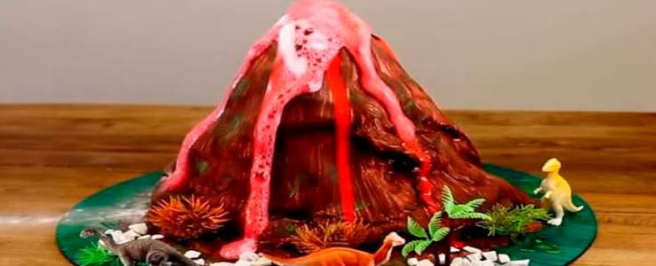
Por que o vulcão de bicarbonato acontece?
Uma reação química entre bicarbonato de sódio e vinagre produz gás carbônico, causando a famosa espuma.
Aqui você encontra aulas de Química, explicações, curiosidades, experimentos seguros e desafios para testar seus conhecimentos.

Uma reação química entre bicarbonato de sódio e vinagre produz gás carbônico, causando a famosa espuma.
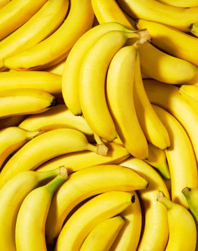
As bananas contêm bastante potássio, incluindo o potássio-40, que é radioativo de forma natural e inofensiva.
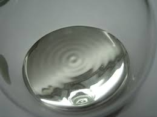
O mercúrio é o único metal da tabela periódica que se mantém no estado líquido à temperatura ambiente.
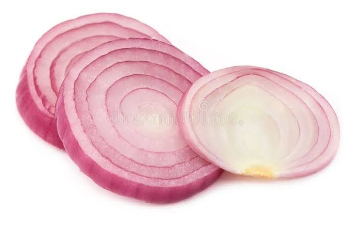
Ao cortar a cebola, rompem-se células que liberam ácidos e enzimas, formando um gás volátil que irrita os olhos.
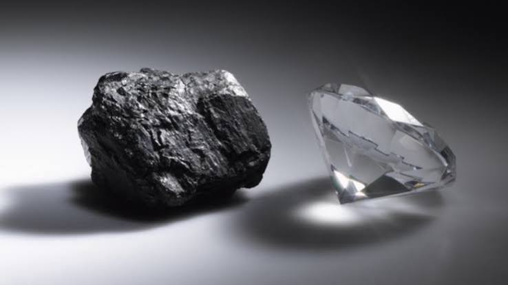
Tanto o diamante precioso quanto o grafite do lápis são formados puramente por átomos de carbono, mudando apenas a estrutura.
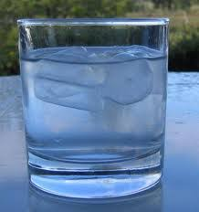
A maioria das substâncias encolhe ao congelar, mas a água se expande devido às pontes de hidrogênio, fazendo o gelo flutuar.
A chama azul do fogão indica que há oxigênio suficiente para queimar o gás por completo, gerando mais calor e menos fuligem.
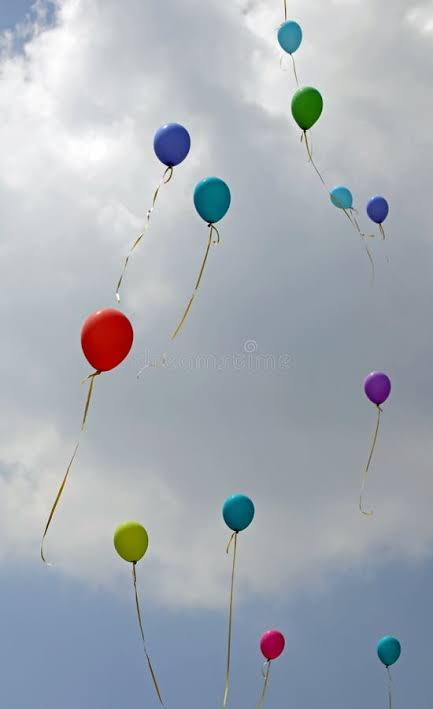
O hélio foi descoberto primeiro no Sol através da análise da luz solar (espectroscopia) antes de ser encontrado na Terra.
O sabão tem uma ponta que adora água e outra que adora gordura, unindo os dois para desgrudar a sujeira das roupas e louças.
O ar ao nosso redor tem peso e exerce pressão constante sobre todos os corpos, equivalente a cerca de 1 kg por centímetro quadrado.
As cores vivas dos fogos de artifício vêm da queima de sais de diferentes metais: cobre dá verde, estrôncio dá vermelho e sódio dá amarelo.
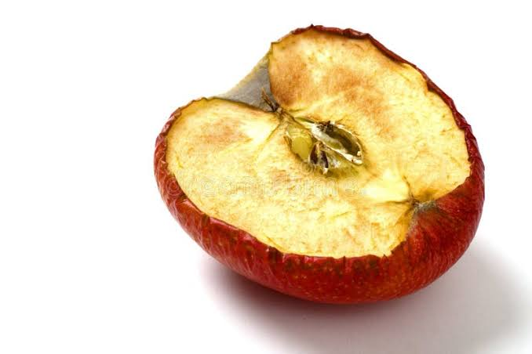
Quando a maçã é cortada, enzimas entram em contato com o oxigênio do ar, provocando uma reação de oxidação que escurece a fruta.
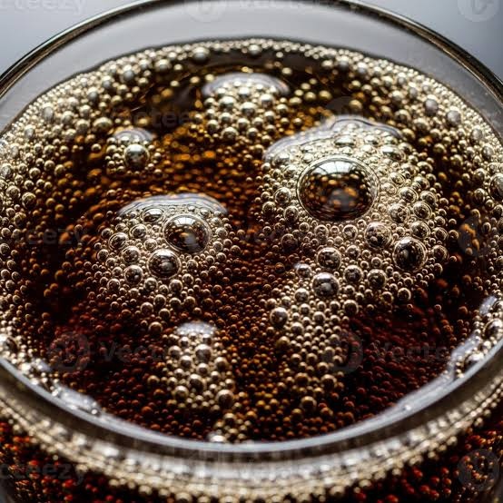
O gás carbônico é dissolvido na bebida sob alta pressão. Quando você abre a garrafa, a pressão cai e o gás escapa formando bolhas.
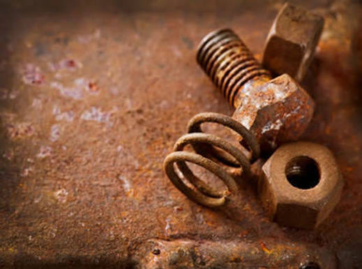
A ferrugem ocorre quando o ferro entra em contato com o oxigênio do ar e a umidade, formando óxidos metálicos através de uma reação de oxidação lenta.
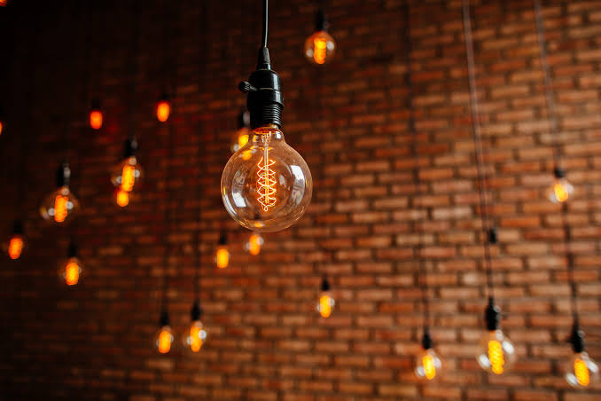
O filamento de tungstênio dentro das lâmpadas incandescentes suporta temperaturas altíssimas sem derreter, emitindo luz intensa e calor.
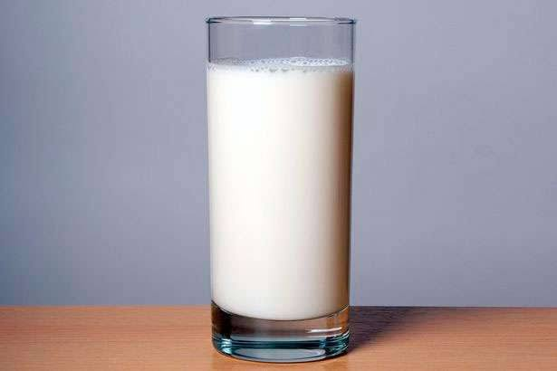
O leite azeda devido à ação de bactérias que consomem a lactose (o açúcar do leite) e a transformam em ácido lático, coalhando o líquido.
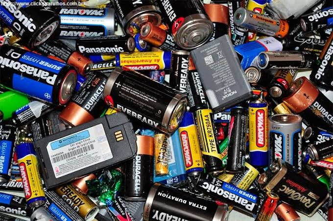
As pilhas funcionam por meio de reações químicas de oxi-redução, onde os elétrons se movimentam de um material para outro gerando corrente elétrica.
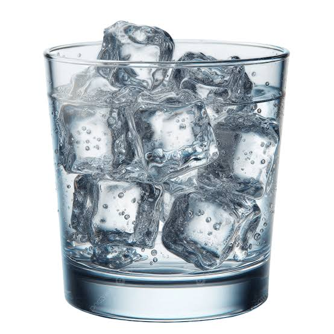
O processo de mudança de fase do gelo absorve calor do ambiente ao redor para conseguir derreter, causando uma forte sensação de resfriamento na pele.
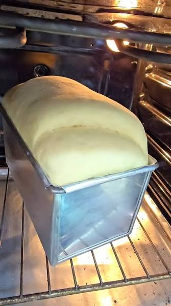
O fermento biológico consome os açúcares da massa e libera gás carbônico; preso na estrutura da massa, o gás faz o pão crescer e ficar fofinho.
O gelo seco é gás carbônico congelado no estado sólido. Ele passa direto do estado sólido para o gasoso sem virar líquido, processo chamado sublimação.